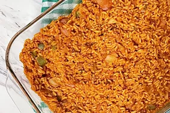

Pilau Recipe

Delicious Pilau
Pilau is a flavorful and aromatic rice dish that's a favorite in many
cuisines. Here's how you can make it at home.
Ingredients
- 2 cups basmati rice
- 1/2 kg chicken, cut into pieces
- 1 large onion, finely chopped
- 2 cloves garlic, minced
- 1 teaspoon ground cumin
- 1 teaspoon ground coriander
- 1/2 teaspoon turmeric powder
- 2 cups chicken broth
- Salt and pepper to taste
- Fresh cilantro for garnish
Instructions
-
Rinse the rice under cold water until the water runs clear. Drain and
set aside.
-
In a large pot, heat some oil over medium heat. Add onions and garlic,
sauté until golden brown.
-
Add chicken pieces, cumin, coriander, and turmeric. Cook until chicken
is browned.
-
Stir in the rice and cook for a few minutes, stirring occasionally.
-
Pour in chicken broth, season with salt and pepper. Cover and simmer
until the rice is tender and cooked through.
-
Fluff the pilau with a fork, garnish with fresh cilantro, and serve hot.